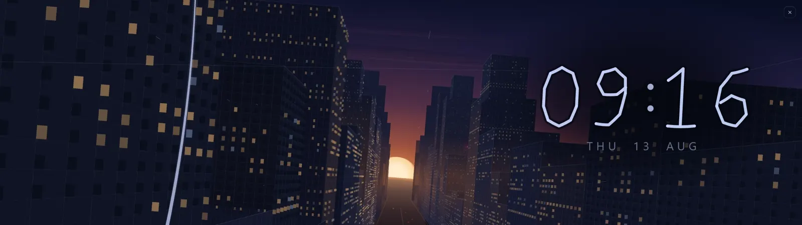

Pick your file on the download page.
This file is for a computer
Xenon installs on a Windows, Mac or Linux PC. Open xenon-app.com on your computer, or send yourself the link.

Thanks for downloading Xenon
Xenon is written by one person, with no ads and no investors. It keeps going because people support it.
The app stays free and complete even if you never give anything.
What happens now